Salwan Aldhahab
Hardware & Software Engineer
Project 04 · Digital VLSI / ASIC
A complete Cadence ASIC implementation of a 32-bit Arithmetic-Logic Unit on the GPDK045 45 nm CMOS process — from Verilog RTL through simulation, synthesis, place-and-route, physical signoff and GDSII export, to full-chip pad-frame integration. Built on a bit-slice architecture: one verified 1-bit slice tiled 32 times through a ripple carry.
EECS 4612 · Digital VLSI · Lassonde School of Engineering, York University
The ALU operates on two 32-bit operands A and B under a 4-bit function select S[3:0] and carry-in Cin, producing a 32-bit result F and carry-out Cout; two serial inputs feed the shift operations. The design was written in two styles — a structural/hierarchical core built from 32 one-bit slices and a single-block behavioural core — carried through the full RTL-to-GDS flow, compared, and the smaller/faster hierarchical core selected for chip integration.
The four select bits are partitioned in hardware: the upper pair S3 S2 chooses the operation class (arithmetic / logic / shift) at the output multiplexer, while the lower pair S1 S0 chooses the specific function. Cin distinguishes the two operations that share each arithmetic opcode.
| Class (S3 S2) | Select S1 S0 | Function |
|---|---|---|
| Arithmetic (00) | 0 0 | F = A · F = A + 1 (Cin) |
| 0 1 | F = A + B · A + B + 1 | |
| 1 0 | F = A + B̄ · A − B (subtract) | |
| 1 1 | F = A − 1 · F = A | |
| Logic (01) | 0 0 | F = A · B (AND) |
| 0 1 | F = A + B (OR) | |
| 1 0 | F = A ⊕ B (XOR) | |
| 1 1 | F = Ā (NOT) | |
| Shift right (10) | X X | F = shr A (shift right one bit) |
| Shift left (11) | X X | F = shl A (shift left one bit) |
The whole design rests on one carefully built block. Each 1-bit slice runs an arithmetic circuit and a logic circuit in parallel (both controlled by S1 S0), and an output 4:1 multiplexer selects between the arithmetic result, the logic result, and the two shifted versions of A (controlled by S3 S2). This two-level select is what makes every slice identical — no bit position needs special-case control.
The arithmetic unit turns a single full adder into eight operations by multiplexing its second operand between 0, B, B̄ and 1. Subtraction reuses the same adder in two's-complement form — A − B = A + B̄ + 1 — so no dedicated subtractor is needed. The full adder shares its first XOR term between the sum and carry paths to minimise gate count:
assign sum_o = a_i ^ b_i ^ cin_i;
assign cout_o = (a_i & b_i) | (cin_i & (a_i ^ b_i));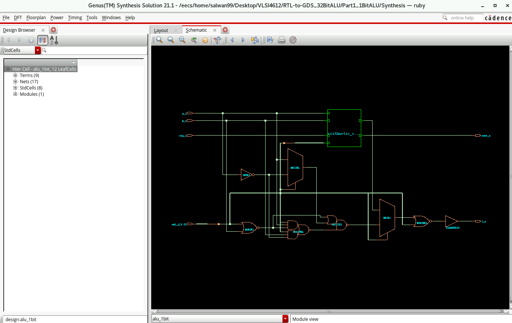
Thirty-two identical slices are chained through a ripple carry: the external Cin enters slice 0, each slice passes its carry to the next, and the final carry becomes Cout. The same S3 S2 S1 S0 bus fans out to every slice. Shifts are handled once at the top level on the whole word.
Design intent is captured at the register-transfer level and progressively refined — through synthesis and physical implementation — into geometry, with functional and physical correctness checked at every hand-off. A failed signoff check (timing / DRC / connectivity) loops back as an ECO fix.
| Item | Setting |
|---|---|
| Process | Cadence GPDK045 · 45 nm bulk CMOS |
| Standard-cell library | gsclib045 (tech + macro LEF) |
| Timing corner | PVT_0P9V_125C — worst-case slow_vdd1v0 |
| Supply / ground | VDD / VSS |
| Routing pin layer | Metal 4 |
| Stage | Tool | Role |
|---|---|---|
| Simulation | Xcelium (SimVision) | Event-driven RTL verification vs testbenches |
| Synthesis | Genus 21.17 | RTL → gate netlist; area / power / timing |
| Place & Route | Innovus | Floorplan, power, placement, routing, timing |
| Signoff | Innovus / Pegasus / Assura | DRC and connectivity (LVS-style) checks |
| Chip assembly | Virtuoso | Pad-frame placement, I/O wiring, stream-out |
Choosing the slow, low-voltage, high-temperature corner (0.9 V, 125 °C) for setup analysis is deliberate — it is the worst case for cell delay, so timing that closes here closes across the operating range.
Three designs were carried through the flow: the 1-bit slice, the 32-bit hierarchical (structural) core, and a 32-bit behavioural core. The behavioural code writes each arithmetic operation as an independent +, so the synthesiser infers about twice the adder hardware (64 vs 32 full adders) and cannot share it — making it substantially larger.
| Metric | 1-bit slice | 32-bit hierarchical | 32-bit behavioural |
|---|---|---|---|
| Standard cells | 12 | 367 | 635 |
| Total area (µm²) | 39.67 | 975.45 | 1487.02 |
| Total power (µW) | 0.998 | 25.32 | 22.29 |
| Critical path (ns) | 3.881 | 9.724 | 9.832 |
| Est. f_max (MHz) | ≈257 | ≈103 | ≈102 |
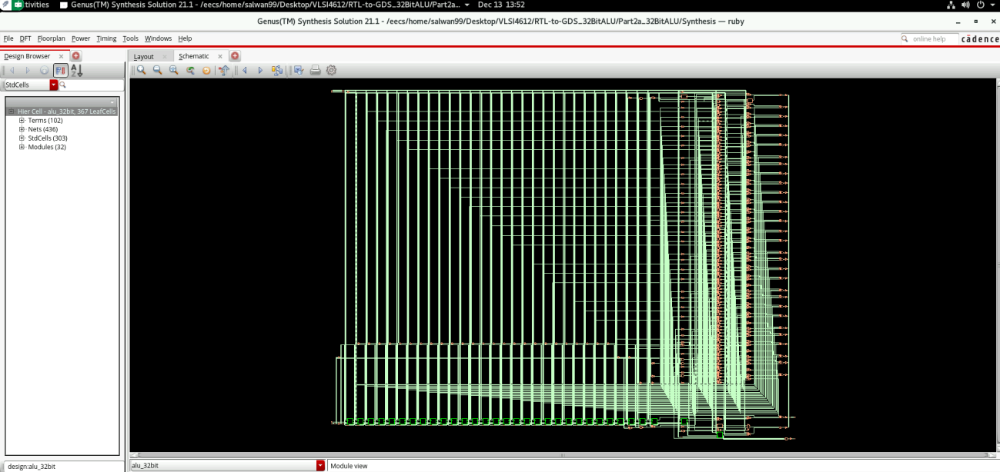
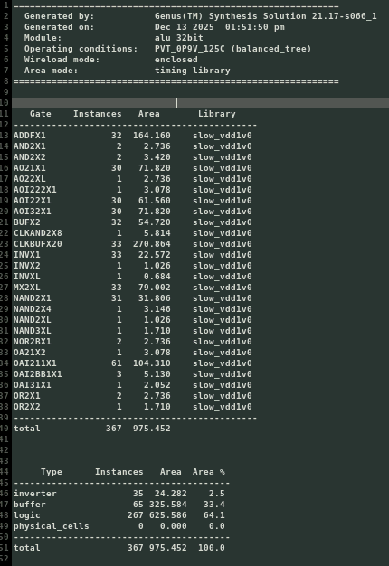
Core area (µm²) — hierarchical vs behavioural
Area: the hierarchical core is 34.4% smaller thanks to operand-mux reuse of a single adder per slice. Speed: the two are effectively tied (9.72 vs 9.83 ns) — both limited by a 32-stage ripple-carry chain that dominates the critical path (≈186 ps per adder stage). Power: the behavioural design draws marginally less total power because its redundant adders are not all active for a given operation, a small effect that does not offset the area gap.
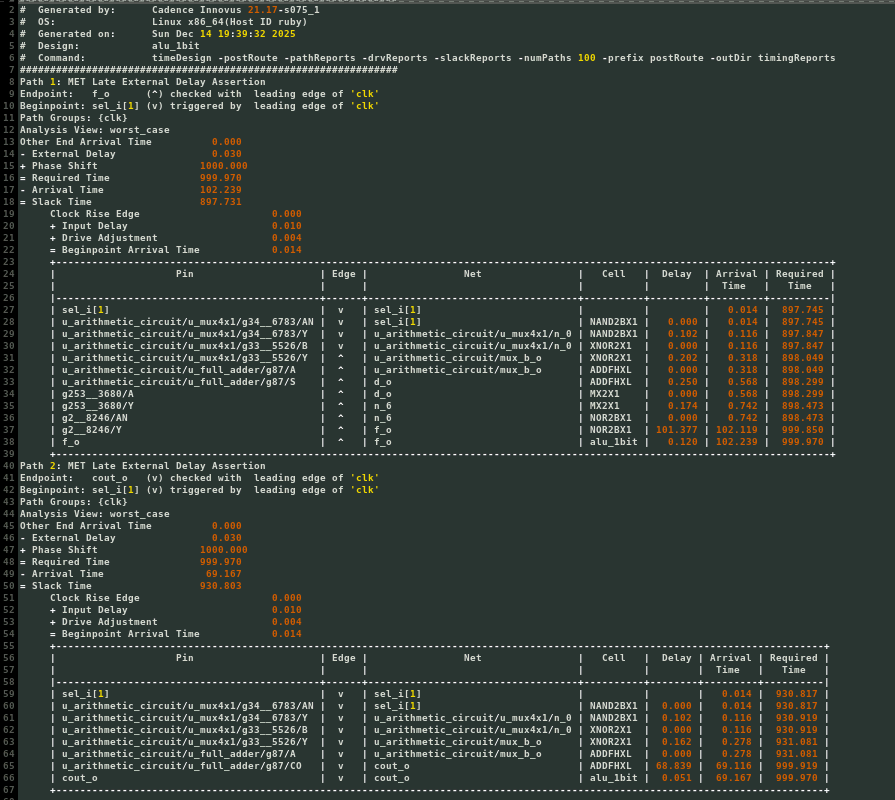
The synthesised netlist is imported into Innovus, floorplanned, and given power rails (VDD/VSS), placement and routing. The 32-bit hierarchical core places into a die of roughly 50.8 × 44.5 µm, with the ripple-carry adder chain forming the dominant routed path.
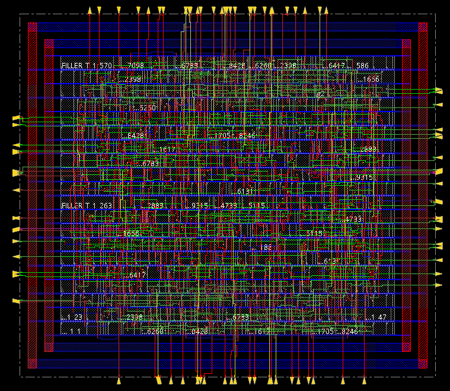
Two signoff checks confirm the layout is manufacturable and matches the netlist. Both pass cleanly on every design: the geometry obeys all 45 nm design rules, and every net is fully connected with no opens or shorts.
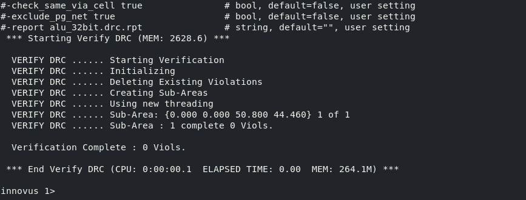
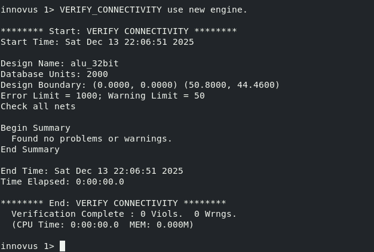
Because every block is small, verification uses exhaustive rather than random vectors. Each sub-block (4:1 mux, arithmetic circuit, logic circuit) is checked in Xcelium with a self-checking testbench that sweeps all input combinations, then the assembled slice is verified against the full functional table, and finally the 32-bit cores are simulated with wide operands across every operation class.
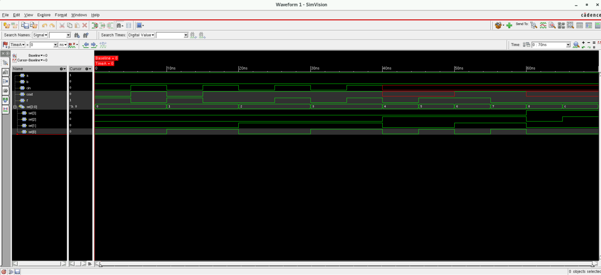
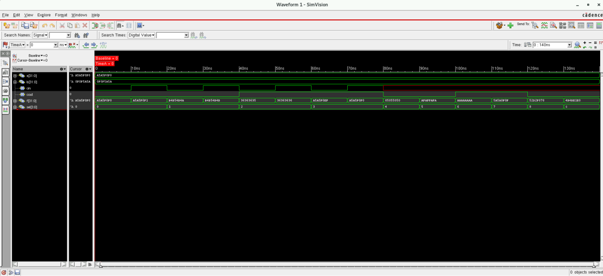
a = 1'b1; b = 1'b0;
sel = 4'b0000; cin = 1'b0; #5; // F = A
sel = 4'b0001; cin = 1'b0; #5; // F = A + B
sel = 4'b0010; cin = 1'b1; #5; // F = A - B (two's complement)
sel = 4'b0100; #5; // F = A & B
sel = 4'b1000; #5; // F = shr A
$finish;Shifts are handled once at the top level rather than inside each slice, mirroring the per-slice output mux but applied to the whole word:
assign f_o = (sel[3:2] == 2'b10) ? (a >> 1) :
(sel[3:2] == 2'b11) ? (a << 1) : ripple_result;
assign cout_o = (sel[3:2] == 2'b10 || sel[3:2] == 2'b11) ? 1'b0 : carry[32];A representative verification vector set — the 4:1 multiplexer, exercised across both complementary operand sets:
| a b c d | S1 S0 | y |
|---|---|---|
| 0 1 0 1 | 0 0 | 0 |
| 0 1 0 1 | 0 1 | 1 |
| 0 1 0 1 | 1 0 | 0 |
| 0 1 0 1 | 1 1 | 1 |
The selected core is streamed out as GDSII and placed inside a 104-signal pad ring — 26 pads on each of the four edges — in Virtuoso. Grouping the buses by edge keeps the core-to-pad routing short: operands A/B enter from the top and left, the result F leaves from the right and bottom, and the controls sit together on the bottom edge. Corner pads carry VDD/VSS.
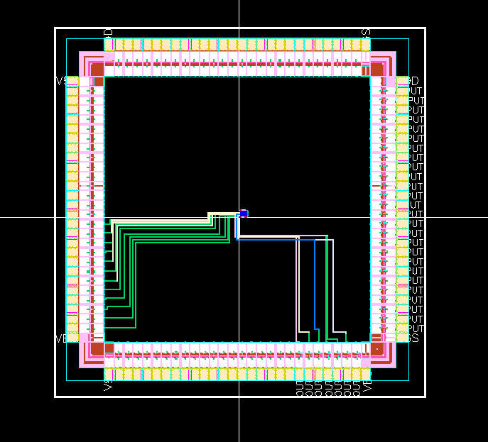
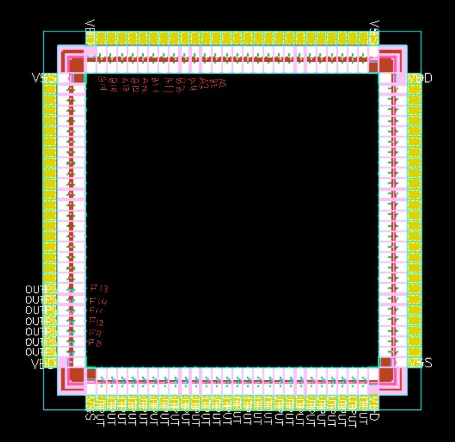
| Edge | Signals | Pads |
|---|---|---|
| Top | A[0:25] — operand A, low half | 26 |
| Left | A[26:31], B[0:19] | 26 |
| Bottom | B[20:31], S[0:3], Cin, DR, DL, F[26:31], Cout | 26 |
| Right | F[0:25] — result F, low half | 26 |
| Total signal pads | VDD/VSS supplied by the pad frame | 104 |
Status: the core is placed and a subset of I/O nets are wired; the pad plan, pin assignment and routing methodology are fully defined — completing the remaining pad connections and re-running full-chip DRC/LVS is the final step to a tape-out-ready layout.
| 1-bit slice | 32-bit hierarchical | 32-bit behavioural | |
|---|---|---|---|
| Cells | 12 | 367 | 635 |
| Area (µm²) | 39.67 | 975.45 | 1487.02 |
| Power (µW) | 0.998 | 25.32 | 22.29 |
| Critical path (ns) | 3.881 | 9.724 | 9.832 |
| f_max (MHz) | ≈257 | ≈103 | ≈102 |
| DRC / connectivity | clean | clean | clean |